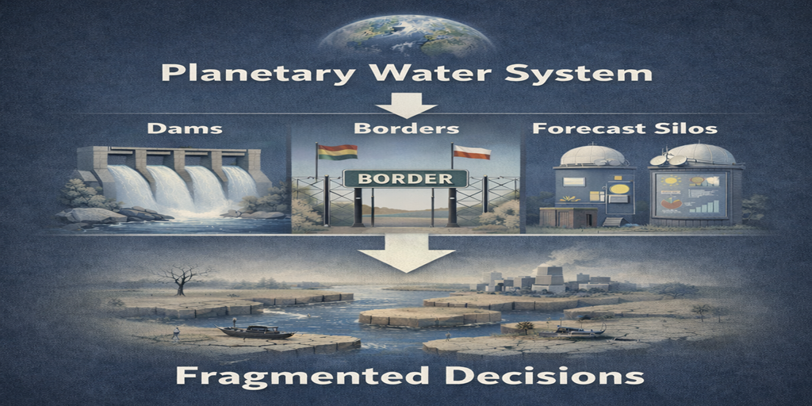
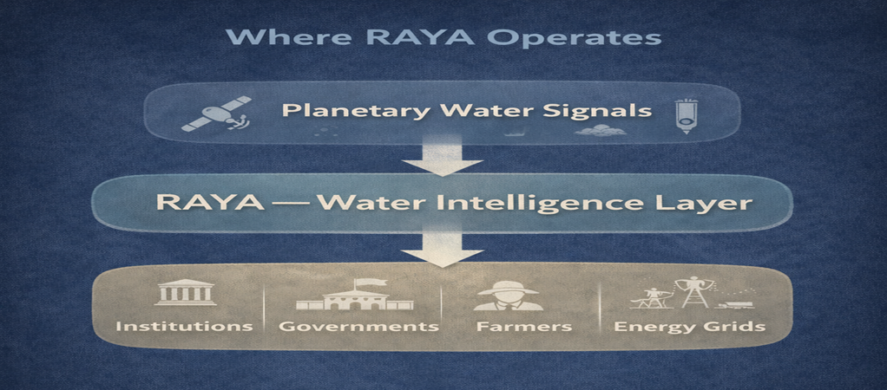

Water is not a resource. It is a continuous circulation system linking oceans, atmosphere, glaciers, rivers, groundwater, and soil moisture. It operates through physics, temperature gradients, and pressure dynamics.

Human intervention isolates flow. Governance isolates responsibility. Forecasts isolate time. The result is repeated damage — despite better prediction.
Humanity can forecast:
Yet:
It aligns human decision timelines with planetary signals. It:
Humans do not gain control over water. They gain coordination with it.
